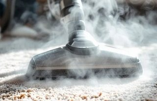

5 أخطاء تخليك تخسر تأمين الشقة وقت التسليم
تطلع من الشقة بعد سنتين وأنت مرتاح إنك حافظت عليها، وبعد أيام يوصلك إن المالك خصم جزء من مبلغ التأمين. تسأل ليش، ويجيك الرد: تنظيف، ودهان، وبقع في المطبخ، وشباك فيه كسر. هالموقف يتكرر كثير مع المستأجرين في الرياض، وأسبابه في العادة أشياء كان ممكن تنحل قبل التسليم بيوم أو يومين شغل. وفي هالمقال نمشي على أشهر أسباب خسارة تأمين الشقة بالرياض، وكيف تتفاداها.
بنشرح خمس أخطاء عند تسليم الشقة بالرياض يقع فيها مستأجرين كثير، وبعدها خطوات عملية توضح كيف تسترجع تأمين الشقة كامل بالرياض أو أغلبه على الأقل، وكيف تجهز الشقة قبل موعد التسليم.
💡 هالمقال نصايح عملية من شغلنا اليومي في تنظيف الشقق قبل تسليمها، وما هو استشارة قانونية. لو صار خلاف على بند في عقدك، ارجع للعقد نفسه أو لمختص.
ليش يخصم المالك من التأمين أصلًا؟
مبلغ التأمين اللي دفعته أول العقد يغطي أي ضرر في الشقة، أو أي مبالغ تبقى عليك وقت الخروج. والمالك وقت الاستلام يقارن حالة الشقة بحالتها يوم سلمك المفتاح، وأي فرق يشوفه أكبر من الاستعمال العادي ممكن يخصمه.
والمشكلة إن تقدير الاستعمال العادي يختلف من شخص لشخص. أنت تشوف الدهون فوق الطباخ شي طبيعي بعد سنتين طبخ، والمالك يشوفها إهمال يحتاج تنظيف ودهان. وهنا يبدأ الخلاف في العادة.
وأغلب بنود الخصم اللي نشوفها ترجع لأشياء تنحل بتنظيف أو صيانة بسيطة: وسخ متراكم، وثقوب مسامير، وبقع، وروائح، وفلاتر مكيفات متسخة. يعني جزء كبير من خسارة تأمين الشقة بالرياض سببه أشياء كان ممكن تصلحها، وغالبًا بتكلفة أقل من الخصم نفسه.
الاستهلاك الطبيعي والضرر
فيه أشياء تعتبر في العادة استهلاك طبيعي، وأشياء يشوفها أغلب الملاك ضرر أو إهمال. والحد بينهم يحدده العقد واتفاقك مع المالك، فما فيه قاعدة وحدة تنطبق على الكل، لكن هالجدول يعطيك فكرة عامة:
| غالبًا استهلاك طبيعي | غالبًا يعتبر ضرر أو إهمال |
|---|---|
| بهتان خفيف في الدهان من الشمس | ثقوب كبيرة أو كثيرة في الجدار |
| خدوش بسيطة في الأرضية من المشي | بلاط مكسور أو مشروخ |
| ارتخاء مقبض باب مع الاستعمال | باب أو شباك مكسور |
| تغير بسيط في لون الفواصل | بقع زيت أو صبغ ما تطلع |
| لمبة محروقة | روائح دخان أو حيوانات في الجدران والسجاد |
الخطأ الأول: تسليم الشقة بدون تنظيف شامل نهائي
بعد ما تنقل الأثاث، تكون الشقة فاضية وتبان أوسع، والغبار وبقايا النقل في كل مكان. كثير من المستأجرين يكتفون بكنسة سريعة ويسلمون المفتاح، على أساس إن المالك بينظف قبل المستأجر الجاي على كل حال.
المالك يشوف الموضوع بشكل ثاني. الشقة اللي ترجع له وسخة بيحتاج يجيب لها عمال تنظيف قبل ما يعرضها، وبيخصم التكلفة من تأمينك. وأحيانًا يكون تقديره للتكلفة أعلى من اللي كنت بتدفعه لو نظفتها بنفسك أو حجزت تنظيف قبل التسليم. وهالغلطة تتصدر أخطاء عند تسليم الشقة بالرياض اللي نشوفها.
وش يعني تنظيف شامل نهائي؟
ولو تسأل كيف تسترجع تأمين الشقة كامل بالرياض، فالتنظيف الشامل يشيل أكبر بند خصم نشوفه. وهو يختلف عن تنظيفك الأسبوعي. الشقة فاضية، فتقدر توصل لأماكن ما كانت تنشاف وقت السكن: خلف مكان الثلاجة والغسالة، وتحت مكان الكنب، وزوايا الغرف اللي كانت فيها دواليب. وهالأماكن عادة يكون فيها أكثر وسخ في الشقة كلها.
- الأرضيات كاملة مع الزوايا والنعلات
- الجدران والأبواب ومقابضها ومفاتيح الكهرباء
- المطبخ: الدواليب من داخل وبرا، والشفاط، والجدار خلف الطباخ
- الحمامات: الأطقم والسيراميك والفواصل والمرايا
- الشبابيك ومجاريها والزجاج من الداخل
- المكيفات وفلاترها
محتاج تنظيف احترافي؟
بتسلم شقتك قريب؟ فريقنا ينظفها بعد نقل الأثاث من السقف للأرضية، عشان تسلمها بحالة ما فيها مجال للخصم
الخطأ الثاني: آثار على الجدران والأرضيات كان ممكن تتعالج
سنة أو سنتين سكن تترك آثارها: ثقوب مسامير البراويز، وبراغي حامل التلفزيون، وخطوط الكراسي على الجدار، وبقع أيادي الأطفال حول مفاتيح الكهرباء، وأثر شريط لاصق. كل وحدة لحالها ما تلفت النظر، لكن لما يشوفها المالك مع بعض يحس إن الشقة تحتاج دهان كامل.
وأغلب هالآثار تنعالج قبل التسليم بأدوات تلقاها في أي محل عدد. ثقوب المسامير الصغيرة تنسد بمعجون جدار، وتنصنفر، وتنطلى بلمسة من نفس اللون. والبقع على الدهان القابل للغسيل تطلع بإسفنجة ناعمة وموية دافية. وأثر اللاصق يروح بقماشة فيها شوية زيت أو مزيل لاصق، وبعدها تمسح المكان.
إهمال هالأشياء من أكثر أسباب خسارة تأمين الشقة بالرياض، لأن المالك يحسب تكلفة دهان الغرفة كاملة، مع إن المشكلة كانت كم ثقب وبقعة.
الأرضيات
الأرضيات من أخطاء عند تسليم الشقة بالرياض اللي تبان من أول خطوة يخطوها المالك داخل الشقة. البورسلان والسيراميك يتحملون، لكن البقع على الفواصل والخدوش من سحب الأثاث تبان وقت الاستلام. نظف الفواصل بفرشاة ومنظف مناسب، وامسح آثار الأثاث. ولو فيه بلاطة انكسرت في وقتك، الأفضل تصلحها قبل التسليم بدل ما يحسبها المالك بسعره هو.
ولو كان في الشقة باركيه، فالخدوش العميقة وبقع الموية أصعب في المعالجة. لا تصنفر الخشب بنفسك لو ما عندك خبرة، لأن الضرر ممكن يزيد. صوّر حالته واتفق مع المالك على الحل.
الخطأ الثالث: ما وثّقت حالة الشقة يوم استلمتها
هالغلطة تصير قبل التسليم بسنين، يوم استلمت الشقة أول مرة. تدخل الشقة متحمس، ترتب الأثاث، وما تصور شي. وبعد سنتين، لما يقول المالك إن البقعة في الجدار أو الشرخ في البلاط صار في وقتك، ما عندك شي يثبت العكس.
صوّر كل غرفة من أكثر من زاوية، وقرّب على أي عيب موجود: شرخ، أو بقعة، أو بلاطة مكسورة، أو مكيف ما يبرد زين، أو باب ما يقفل. ويفضل تكون الصور أو الفيديو بتاريخ واضح، وترسلها للمالك أو المكتب برسالة عشان يكون فيه سجل عند الطرفين.
وأي أحد يسألنا كيف تسترجع تأمين الشقة كامل بالرياض، أول شي نقوله له: صوّر يوم الاستلام، لأن الصور هي اللي تفرق بين عيب قديم وضرر جديد.
لو ما صورت وقت الاستلام
لو فاتك التوثيق وقت الاستلام، تقدر تحمي نفسك جزئيًا. دوّر في جوالك على صور قديمة صورتها في الشقة لأي سبب، لأنها ممكن تظهر حالة جدار أو أرضية في تاريخ معين. ومراسلاتك مع المالك عن أي عطل بلغته عنه وقتها تفيد بعد.
وفي يوم التسليم، صوّر الشقة بعد التنظيف وقبل ما تسلم المفتاح. هالصور توضح الحالة اللي سلمت عليها، وتقلل احتمال خسارة تأمين الشقة بالرياض بسبب أشياء صارت بعد خروجك.

الخطأ الرابع: بقع وروائح في المطبخ والحمام
المطبخ والحمام أول مكانين يفحصهم أي مالك، لأنهم أكثر مكانين تبان فيهم طريقة السكن، ولو لقاهم وسخين بيدقق بعدها في كل زاوية. دهون متراكمة على الشفاط والجدار خلف الطباخ، وترسبات بيضاء على الحنفيات والأطقم، وسواد على فواصل الدش، وريحة من الصرف. كل هذا يعطي انطباع إن الشقة انهملت حتى لو باقي الغرف نظيفة، وهو من أخطاء عند تسليم الشقة بالرياض اللي تفتح باب الخصم على بنود ثانية.
والروائح بالذات صعبة، لأنها تبقى في الشقة المقفلة وتبان أول ما يفتح المالك الباب: ريحة دخان، أو أكل، أو رطوبة، أو صرف. وأغلبها يطلع بتنظيف عميق وتهوية قبل التسليم بكم يوم.
المطبخ
ابدأ بالشفاط: فك الفلتر المعدني وانقعه في موية حارة مع مزيل دهون، وامسح جسم الشفاط من برا ومن تحت. بعدين الجدار خلف الطباخ والسيراميك حوله، والدواليب من داخل وبرا، والمغسلة وحنفيتها. ولا تنسى الأماكن اللي كانت تحت الأجهزة، لأن أرضية مكان الثلاجة يكون فيها عادة بقايا متراكمة من سنين.
الحمام
نظف الترسبات على الحنفيات والدش بمزيل ترسبات مناسب، والسواد على الفواصل بفرشاة، وامسح المرايا والزجاج. وصب موية في كل الصفايات قبل التسليم بيوم، لأن الصفاية الناشفة تطلع ريحة صرف. ولو فيه تسريب في سيفون أو حنفية، صلحه أو بلّغ المالك فيه قبل يوم التسليم.
الخطأ الخامس: ما راجعت بنود العقد قبل الإخلاء
كثير من المستأجرين ما يقرون عقد الإيجار إلا يوم التوقيع، وبعدها ينسونه، فيسوون كل شي صح ما عدا الشي اللي العقد يطلبه بالتحديد، ومن هنا تجي أخطاء عند تسليم الشقة بالرياض ما كان لها داعي. والعقد غالبًا فيه بنود عن حالة التسليم: هل لازم تدهن الشقة قبل الخروج؟ هل التنظيف عليك؟ كم مدة الإشعار قبل الإخلاء؟ ومتى يرجع التأمين وبأي شروط؟
اقرأ عقدك قبل موعد الخروج بشهر على الأقل. لو عقدك موثق إلكترونيًا، مثل عقود منصة إيجار، راجع بنوده هناك. ولو فيه بند ما فهمته، اسأل المالك أو المكتب كتابيًا عن المطلوب بالضبط، واحتفظ بالرد.
وفيه أشياء ممكن تنخصم من التأمين وما لها علاقة بالنظافة: فواتير كهرباء أو موية متأخرة، أو أيام زيادة بعد نهاية العقد، أو إشعار إخلاء متأخر. فلو تبي تعرف كيف تسترجع تأمين الشقة كامل بالرياض، لازم تقفل هالأمور المالية قبل يوم التسليم.
كيف تسترجع تأمين الشقة كامل بالرياض؟ الخطوات بالترتيب
هذي خطوات مرتبة حسب الوقت، تمشي عليها من قبل الخروج بشهر لين يوم التسليم:
- قبل شهر: اقرأ العقد، وبلّغ المالك كتابيًا بموعد خروجك حسب مدة الإشعار.
- قبل ثلاث أسابيع: افحص الشقة غرفة غرفة، وسجّل كل شي يحتاج إصلاح أو تنظيف.
- قبل أسبوعين: صلّح الأشياء البسيطة مثل الثقوب والمقابض واللمبات المحروقة والحنفيات اللي تسرب.
- قبل أسبوع: سدد الفواتير، واطلب قراءة نهائية للعدادات إذا كانت باسمك.
- بعد نقل الأثاث: تنظيف شامل للشقة الفاضية.
- يوم التسليم: صوّر الشقة كاملة، وامشِ مع المالك فيها، واطلب تأكيد مكتوب بالاستلام.
الترتيب هذا يمنع الزحمة في آخر يومين، وهي أكثر فترة تصير فيها أخطاء عند تسليم الشقة بالرياض لأنك مستعجل ومشغول بالنقل.
امشِ مع المالك في الشقة
لا تسلم المفتاح عند الباب وتمشي. اطلب من المالك أو مندوب المكتب يدخل ويفحص الشقة وأنت موجود. لو لاحظ شي، تقدر توضح أو تصلحه في نفس اليوم، أو تتفقون على تكلفته قدامك بدل ما يوصلك خصم بعد أسبوع بدون تفاصيل.
وبعد الفحص، اطلب تأكيد مكتوب، ولو برسالة واتساب، إن الشقة استلمت وحالتها مقبولة، أو بالملاحظات اللي عليها. هالرسالة تفيدك لو صار خلاف بعدين على خسارة تأمين الشقة بالرياض أو جزء منه.
كيف تجهز الشقة بالشكل المطلوب قبل موعد التسليم؟
التجهيز للتسليم شقين: إصلاحات صغيرة، وتنظيف شامل. الإصلاحات تقدر تسويها بنفسك أو مع فني، لكن التنظيف النهائي للشقة الفاضية شغل طويل، ويجي عادة في أكثر وقت تكون فيه مضغوط بين النقل والترتيب في البيت الجديد.
عشان كذا كثير من المستأجرين يحجزون شركة تنظيف شقق بالرياض بعد نقل الأثاث وقبل التسليم بيوم أو يومين. الفريق يشتغل على الشقة الفاضية من السقف للأرضية، ويوصل للمطبخ والحمامات والشبابيك والمكيفات بأدوات ومنظفات مناسبة، فتسلم الشقة بحالة يصعب يعترض عليها المالك.
والتنظيف ما يصلح الأعطال ولا يسد الثقوب، فخلّص الإصلاحات أول، بعدين التنظيف، وآخر شي التصوير. وهالترتيب يقفل أغلب أسباب خسارة تأمين الشقة بالرياض اللي بيدك، لأن آخر صور تاخذها تكون لشقة مصلحة ونظيفة.
- تنظيف الشقة الفاضية من السقف للأرضية
- إزالة دهون المطبخ والشفاط والدواليب
- إزالة الترسبات من الحمامات والأطقم
- تنظيف الشبابيك ومجاريها والزجاج
- غسيل الأرضيات وتنظيف الفواصل
- تنظيف فلاتر المكيفات وواجهاتها
قائمة فحص غرفة بغرفة
قبل ما تحجز التنظيف أو تبدأ الإصلاحات، امشِ في الشقة بهالقائمة وسجّل كل ملاحظة في جوالك. بتكشف لك أغلب أخطاء عند تسليم الشقة بالرياض قبل ما يشوفها المالك، ويبقى عندك وقت تصلحها:
| المكان | وش تفحص |
|---|---|
| الصالة والمجالس | الجدران والثقوب، الإضاءة، المكيف، سكك الستائر |
| غرف النوم | الدواليب المدمجة من داخل، الأبواب ومفاتيحها، الشبابيك |
| المطبخ | الشفاط، الدواليب، المغسلة، الجدار خلف الطباخ، الأجهزة المرفقة |
| الحمامات | الأطقم، الترسبات، الصفايات، السخان، المرايا |
| المدخل والممرات | الباب الرئيسي، الأقفال، الجرس، النعلات |
| البلكونة أو السطح | الأرضية، فتحة الصرف، الغبار المتراكم |
المكيفات بند ينساه كثير من المستأجرين
المكيفات من أول الأشياء اللي يشغلها المالك وقت الاستلام. لو طلع منها غبار أو ريحة، أو كانت الفلاتر سوداء، يحسب تنظيف المكيفات كلها من التأمين، وأحيانًا صيانة بعد.
نظف الفلاتر بالموية واتركها تنشف تمامًا قبل ما ترجعها، وامسح الواجهات والفتحات. ولو فيه مكيف فيه تسريب موية أو ما يبرد زين وكان سليم يوم استلمت، الأفضل تبلّغ المالك فيه بدري بدل ما يكتشفه يوم التسليم. وريموت ناقص ممكن يدخل في حساب خسارة تأمين الشقة بالرياض في بعض الشقق، فتأكد إن الريموتات كلها موجودة وفيها بطاريات.
المفاتيح والريموتات والأشياء الصغيرة
الأشياء الصغيرة من أسهل أخطاء عند تسليم الشقة بالرياض في التصحيح، وأسهلها في النسيان: نسخ المفاتيح كلها، وريموت باب الموقف، وكروت الدخول للعمارة، ولمبات محروقة ما تبدلت، ومسامير ستائر انشالت مع الستارة. كل وحدة منها مبلغ بسيط، لكنها تتجمع.
اجمع كل المفاتيح والريموتات في كيس واحد قبل أسبوع من التسليم، وعدها مقابل اللي استلمته أول العقد. وبدّل اللمبات المحروقة بنفس النوع. كلها ما تاخذ منك ساعة.
متى يكون الدهان عليك؟
قبل ما تشتري علبة دهان، تأكد هل الدهان عليك أصلًا، لأن الصرف على شي مو مطلوب منك ما يفيدك وأنت تخطط كيف تسترجع تأمين الشقة كامل بالرياض. بعض العقود تشترط تسليم الشقة مدهونة، خصوصًا لو استلمتها مدهونة جديد. وبعضها ما يذكر الدهان أبد، ويعتبر بهتان الدهان مع السنين شي طبيعي. فارجع لعقدك قبل ما تقرر.
لو الدهان عليك، استخدم نفس اللون والنوع، واطلب من المالك اسم اللون أو كوده إذا عنده. الدهان بلون قريب بس مو نفسه يبان في الضوء، وممكن يخلي المالك يطلب إعادة الغرفة كاملة. ولو مو عليك، فاكتفِ بمعالجة الثقوب والبقع.
جرد الشقق المفروشة
لو كانت الشقة مفروشة، ففحص المالك يشمل الأثاث والأجهزة والمفارش والأواني مع الجدران والأرضيات. وأي قطعة ناقصة أو مكسورة أو فيها بقع ممكن تنخصم.
اطلب قائمة الجرد اللي استلمت عليها، وطابقها قطعة قطعة قبل الخروج. نظف الكنب والمراتب من البقع، واغسل المفارش والستائر لو كانت متسخة، ورجّع كل قطعة لمكانها. ولو فيه شي انكسر، بدّله بنفس النوع أو اتفق مع المالك على قيمته قبل يوم التسليم، عشان ما تتفاجأ بـخسارة تأمين الشقة بالرياض بمبلغ أكبر من قيمة القطعة.
البخور والتدخين وأثرهم على الجدران
دخان البخور والتدخين يترك طبقة صفراء على الجدران والسقف، خصوصًا فوق مكان المبخرة أو الجلسة، وريحة تعلق في الستائر والسجاد المرفق. وهالأثر يبان بوضوح لما تنشال اللوحات والأثاث وتشوف لون الجدار تحتها. والمالك اللي يشوف الاصفرار ويشم الريحة يحس إن الشقة كلها تحتاج تجديد، فيصير البخور من أخطاء عند تسليم الشقة بالرياض اللي تكلف أكثر مما تتوقع.
غسيل الجدران القابلة للغسيل بموية دافية ومنظف خفيف يخفف الاصفرار، والتهوية لكم يوم مع تنظيف الستائر والسجاد يخفف الريحة. ولو الاصفرار قوي، فممكن تحتاج دهان.
الأجهزة المرفقة مع الشقة
كثير من شقق الرياض تجي بمطبخ راكب فيه فرن وموقد وشفاط، وأحيانًا ثلاجة أو غسالة. هالأجهزة لازم ترجع نظيفة وشغالة، وهي بند ما تقدر تتجاهله لو كنت تدور كيف تسترجع تأمين الشقة كامل بالرياض. الفرن من داخل بالذات يتجمع فيه دهون محروقة، والثلاجة لو انطفت وتقفلت تطلع ريحة عفن خلال أيام.
نظف الفرن بمنظف أفران وخله يشتغل شوي بعدها عشان تطلع الريحة، وفضّي الثلاجة ونظفها واتركها مفتوحة شوي لو بتطفيها. وجرب كل جهاز قدام المالك يوم التسليم.
الحيوانات الأليفة في الشقة
لو عندك قطة أو أي حيوان أليف، فالمالك بيفحص الشقة بعين أدق. خدوش على الأبواب وإطارات الشبابيك، وشعر في زوايا الدواليب ومجاري المكيفات، وريحة في السجاد المرفق أو في الغرفة اللي كان فيها صندوق الرمل. وبعض الملاك يحسبون تنظيف عميق للشقة كاملة بمجرد ما يعرفون إن فيه حيوان. والخصم في هالحالات يكون على الريحة والشعر أكثر من الخدوش، وهذا من أكبر أبواب خسارة تأمين الشقة بالرياض لأصحاب القطط.
اشفط الشقة كاملة بمكنسة قوية، وانتبه للزوايا وتحت الدواليب المدمجة، ونظف السجاد المرفق بمنظف يشيل الروائح. والخدوش الخفيفة على الخشب تخف بأقلام ترميم بنفس اللون.
الستائر وسككها والسجاد المرفق
المستأجر يفكر في الجدران والأرضيات وينسى الأقمشة المرفقة، وهي من أخطاء عند تسليم الشقة بالرياض اللي يتفاجأ فيها كثير. لو استلمت الشقة بستائر أو سجاد أو موكيت، فهي ترجع ضمن الشقة، ويفحصها المالك مثل الجدران. الستائر تتشرب الغبار والروائح على مدى سنتين، والموكيت يمسك بقع القهوة والأكل وآثار الأحذية.
نزّل الستائر واغسلها أو نظفها بالبخار حسب نوع القماش، وتأكد إن السكك والحلقات كاملة ومثبتة. ونظف الموكيت والسجاد المرفق بالبخار أو بالغسيل والشفط، لأن الشفط العادي ما يطلع البقع القديمة.
السخانات والسباكة قبل الخروج
السخانات والحنفيات والسيفونات تستخدمها كل يوم، فتعطل شوي شوي بدون ما تنتبه: حنفية تنقط، أو سيفون يسرب، أو سخان صوته عالي أو ماؤه ما يسخن زين. والمالك يجرب هالأشياء يوم الاستلام، وأي عطل يشوفه يحسبه عليك لو ما بلّغت عنه قبل.
ولو تبي تعرف كيف تسترجع تأمين الشقة كامل بالرياض بدون نقاش على السباكة، جرّب كل حنفية ودش وسيفون قبل التسليم بأسبوعين، وصلّح الأشياء البسيطة مثل جلود الحنفيات ورؤوس الدش. ولو فيه عطل أكبر كان يتطور من فترة، بلّغ المالك فيه كتابيًا بدل ما يكتشفه يوم الاستلام.
الشبابيك والأبواب والأقفال
شباك ما يقفل زين، أو زجاج فيه شرخ، أو باب غرفة يحتك في الأرض، أو قفل حمام ما يشتغل. هالأشياء تبان تافهة، لكن المالك يحسب لكل وحدة منها فني وقطعة غيار، فتتحول أشياء ما تكلف كثير إلى خسارة تأمين الشقة بالرياض بمبلغ ما توقعته.
افتح وقفّل كل شباك وباب في الشقة، وجرب كل قفل بمفتاحه. وشحم المفصلات اللي تصدر صوت، وشد البراغي المرتخية في المقابض. ولو فيه زجاج انشرخ في وقتك، فتبديله قبل التسليم غالبًا أرخص من خصمه.
رسومات الأطفال على الجدران
البيت اللي فيه أطفال صغار ما يسلم من رسمة قلم على جدار الصالة أو بقعة ألوان خلف باب الغرفة. والملاك يعتبرونها في العادة ضرر يحتاج دهان، خصوصًا لو كانت كثيرة أو واضحة. فلو عندك أطفال وتفكر كيف تسترجع تأمين الشقة كامل بالرياض، ابدأ من هالجدران.
أقلام الرصاص والشمع تخف بممحاة بيضاء أو إسفنجة ناعمة مع موية وصابون، وبعض الأقلام تحتاج منظف مخصص. جرّب على زاوية صغيرة أول عشان ما تشيل الدهان. ولو ما طلعت، فلمسة دهان بنفس اللون على المكان أرخص من دهان الغرفة كاملة.
لو كنت تسلم الشقة لمكتب عقار
بعض الشقق تدار عن طريق مكاتب عقارية، والمكتب عادة عنده نموذج فحص ثابت يمشي عليه مع كل شقة. وهالشي له جانب إيجابي: المعايير واضحة، وتقدر تطلب النموذج قبل التسليم وتجهز الشقة على أساسه، فتعرف من بدري كيف تسترجع تأمين الشقة كامل بالرياض مع هالمكتب بالذات.
اطلب من المكتب قائمة الأشياء اللي يفحصونها، واسأل عن موعد الفحص ومين بيحضره. وخلك موجود وقت الفحص، واطلب نسخة من التقرير. ولو فيه ملاحظة، اسأل هل تقدر تصلحها خلال يوم أو يومين بدل ما تنخصم.
البلكونة والسطح والموقف
البلكونة والسطح والموقف برا الشقة نفسها، فينساها المستأجر، وتركها بدون تنظيف من أخطاء عند تسليم الشقة بالرياض اللي ما يفكر فيها أحد. ولو شقتك فيها وحدة منها، فهي جزء من التسليم. البلكونة يتجمع فيها غبار ورمل وأحيانًا فضلات طيور، والسطح ممكن تكون عليه أغراض قديمة، والموقف فيه بقع زيت من السيارة.
نظف البلكونة وتأكد إن فتحة الصرف فيها مفتوحة، وفضّي السطح من أي أغراض لك، ونظف بقع الزيت في الموقف بمنظف مخصص أو بودرة تمتص الزيت.
قارن تكلفة التجهيز بالخصم
في أغلب الحالات تطلع خسارة تأمين الشقة بالرياض أكبر من تكلفة تجهيز الشقة نفسها، وتقدر تتأكد من هالشي بورقة وقلم. قبل ما تقرر تسلم الشقة بدون تجهيز، اكتب قائمة بالأشياء اللي ممكن يخصمها المالك: تنظيف عام، وتنظيف مكيفات، ودهان غرفة أو اثنتين، ولمبات، ومفاتيح ناقصة. بعدين اكتب قدام كل بند تكلفته لو سويته بنفسك أو مع فني.
المالك يحسب الخصم بسعر السوق ومعه شوية احتياط، وأنت تقدر تختار الفني وتفاصل في السعر، فالتجهيز بنفسك يطلع أرخص عادة.
رطوبة وعفن خلف الأثاث
العفن خلف الأثاث من المفاجآت اللي تلخبط خطتك وأنت تفكر كيف تسترجع تأمين الشقة كامل بالرياض. لما تنقل دولاب كبير أو كنبة كانت ملاصقة لجدار خارجي، ممكن تتفاجأ ببقع سوداء أو رمادية على الجدار خلفها. هذي رطوبة وعفن تكونوا بسبب قلة التهوية خلف الأثاث، وتبان فجأة يوم النقل.
امسح البقع بمنظف مخصص للعفن والبس قفازات، وهوّي الغرفة كويس لين ينشف الجدار. ولو البقع رجعت أو كانت كبيرة، فممكن يكون فيه تسريب من الجدار نفسه، وهنا بلّغ المالك لأن السبب غالبًا من المبنى، والبلاغ المصور يحميك من خصم على شي ما لك دخل فيه.
لو بتطلع قبل نهاية العقد
أحيانًا تضطر تطلع قبل نهاية العقد، لنقل عمل أو ظروف عائلية. هنا ارجع للعقد وشوف وش يقول عن الخروج المبكر، وتفاهم مع المالك كتابيًا على الموعد وأي شروط.
وفي الفترة الأخيرة، ممكن يطلب المالك يوري الشقة لمستأجرين جدد. خل الشقة مرتبة ونظيفة وقت الزيارات، لأن المالك اللي يشوف الشقة بحالة زينة طول الفترة يكون أسهل في الاستلام. والاستعجال في الخروج المبكر يكثّر أخطاء عند تسليم الشقة بالرياض. وخطوات كيف تسترجع تأمين الشقة كامل بالرياض نفسها ما تتغير، بس تضغطها في وقت أقصر: ابدأ بالعقد ورسالة الإشعار، وبعدها الإصلاحات والتنظيف.
عادات أثناء السكن تحمي تأمينك
أغلب اللي ينخصم وقت الخروج يتكون على مدى السكن نفسه، فتقليل خسارة تأمين الشقة بالرياض يبدأ من أول شهر في الشقة. حط لباد تحت أرجل الكراسي والطاولات عشان ما تخدش الأرضية، واستخدم علاقات لاصقة بدل المسامير للبراويز الخفيفة، وشغّل الشفاط وقت الطبخ، وبلّغ المالك عن أي عطل أول ما يصير.
وكل كم شهر، امسح الجدران حول مفاتيح الكهرباء وخلف الطباخ، ونظف فلاتر المكيفات. وبهالعادات يصير التجهيز للتسليم شغل أيام بدل ما يكون شغل أسابيع.
انقل أثاثك بدون ما تخرب الشقة
كثير من الخدوش والكسور تصير يوم النقل نفسه: دولاب يحتك في إطار الباب، أو ثلاجة تنسحب على البورسلان، أو كنبة تخبط في زاوية الجدار وهي نازلة من الدرج.
لو بتنقل بنفسك أو مع عمال، غطّ إطارات الأبواب بكرتون أو بطانيات قديمة، واستخدم قطع كرتون تحت الأجهزة الثقيلة وأنت تسحبها، وفك الدواليب الكبيرة بدل ما تحاول تمررها كاملة. واتفق مع عمال النقل قبل ما يبدون إن أي خدش يسببونه مسؤوليتهم، وصوّر الأماكن الحساسة قبل النقل.
ولو كانت العمارة فيها مصعد، اسأل الحارس أو الإدارة عن وقت مناسب للنقل، وغطّ أرضية المصعد وجدرانه بكرتون. أي خدش في المصعد أو المدخل ممكن يجيك عليه كلام من المالك، حتى لو كانت الشقة نفسها سليمة.
ترتيب التنظيف في الشقة الفاضية
لو بتنظف بنفسك، فالترتيب يوفر عليك نص الوقت. ابدأ من فوق: السقف والمراوح والإضاءة وأعلى الدواليب، بعدين الجدران والأبواب، بعدين الشبابيك، وآخر شي الأرضيات.
نظف المطبخ والحمامات قبل باقي الغرف لأنهم ياخذون أطول وقت ويحتاجون منظفات أقوى. وفي الأرضيات، ابدأ من أبعد غرفة عن الباب وامشِ باتجاه المدخل، عشان ما تدوس على مكان مسحته. وخل التهوية شغالة طول الوقت، خصوصًا لو تستخدم مزيل دهون أو مزيل ترسبات.
ولو الشقة كبيرة أو فيها أكثر من حمامين، قسّم الشغل على يومين: يوم للمطبخ والحمامات، ويوم للغرف والأرضيات والشبابيك. التنظيف المستعجل في يوم واحد بعد يوم نقل متعب يطلع ناقص في الغالب، والنقص هذا هو اللي يلاحظه المالك.
أدوات تحتاجها لو بتجهز بنفسك
أدوات البيت العادية تكفي لو جهزت هالقائمة قبل ما تبدأ:
- مكنسة كهربائية قوية مع رأس للزوايا
- قماش مايكروفايبر بكميات كافية
- مزيل دهون للمطبخ ومزيل ترسبات للحمامات
- فرشاة صغيرة للفواصل ومجاري الشبابيك
- معجون جدار وسكينة معجون وورق صنفرة ناعم
- علبة دهان صغيرة بنفس لون الجدران
- سلم صغير للأماكن العالية والمكيفات
جهّز كل هالأدوات قبل يوم التنظيف، لأن الطلعات للمحل في نص الشغل تضيع وقت أكثر مما تتوقع.
الإضاءة ومفاتيح الكهرباء
مفاتيح الكهرباء والأفياش تتغير لونها مع اللمس، وأحيانًا يكون عليها أثر لاصق من حماية الأطفال أو شريط. والإضاءات المعلقة والسبوتات يتجمع فيها غبار وحشرات ميتة تبان أول ما تنولع.
امسح المفاتيح بقماشة رطبة شوي بعد ما تفصل الكهرباء أو بحذر، وشيل آثار اللاصق. ونظف أغطية الإضاءة، وبدّل أي لمبة محروقة بنفس اللون والنوع، لأن لمبة بيضاء وسط لمبات صفراء تبان مثل الخطأ.
وش تكتب في رسالة إشعار الخروج؟
لما تبلغ المالك بموعد خروجك، خل الرسالة واضحة ومكتوبة، سواء بالواتساب أو الإيميل أو حسب طريقة التواصل المتفق عليها في العقد. اذكر فيها تاريخ الإخلاء، واطلب تحديد موعد للفحص والاستلام وأنت موجود، واسأل عن طريقة رجوع التأمين ومدته.
ولو عندك حساب بنكي تبي التأمين يتحول عليه، اذكره في نفس الرسالة. ورد المالك على هالرسالة يصير مرجع مكتوب للمواعيد والاتفاقات، ويقلل سوء الفهم في آخر أيام العقد. وخذ لقطة شاشة للرسالة بعد ما توصل، واحفظها مع صور الشقة.
ابدأ صح في شقتك الجديدة
لو بتنتقل لشقة إيجار ثانية، استفد من تجربتك. يوم الاستلام، صوّر كل غرفة وكل عيب قبل ما تدخل أثاثك، وأرسل الصور للمالك في نفس اليوم. واقرأ بنود التسليم في العقد الجديد من البداية، واسأل عن أي شي مو واضح قبل ما توقع.
واحفظ الصور والعقد والرسائل في مجلد واحد على جوالك أو في الإيميل. بعد سنة أو سنتين، لما يجي وقت الخروج، بتلقى كل شي جاهز بدل ما تدور عليه في آخر لحظة.
مكان حامل التلفزيون والرفوف
حامل التلفزيون المثبت في الجدار والرفوف المعلقة يتركون ثقوب أكبر بكثير من ثقوب المسامير، ومعها أحيانًا براغي بلاستيك داخل الجدار. ولما تشيلهم، يبان مكانهم بوضوح، خصوصًا لو كان الدهان حوله أفتح أو أغمق من باقي الجدار.
طلّع البراغي البلاستيك بحذر، وعبّي الثقوب بمعجون مناسب على طبقتين لو كانت عميقة، واتركها تنشف بين الطبقتين. بعدين صنفر وادهن المكان. ولو كان الجدار جبس بورد والثقوب كبيرة، فالأفضل يصلحها فني، لأن المعجون العادي ممكن يتشقق بعد أيام.
الأسقف وبقع التسريب
بقعة صفراء في السقف أو شرخ في الجبس فوق المكيف غالبًا سببها تسريب موية من مكيف أو من الشقة اللي فوقك، وما لك دخل فيها. لكن لو ما بلّغت عنها وقت ظهورها، ممكن يشوفها المالك يوم الاستلام ويحسبها عليك.
صوّر أي بقعة في السقف أول ما تلاحظها، وأرسل الصورة للمالك برسالة. ولو ظهرت قبل الخروج بفترة قصيرة، بلّغ عنها قبل يوم التسليم ووضح مصدرها إذا تعرفه. ولما يكون عند المالك بلاغ قديم منك، يتعامل معها كصيانة عادية بدل ما يحسبها عليك.
الحشرات قبل الخروج
لما تفضّي الشقة، ممكن تكتشف آثار صراصير أو نمل خلف الأجهزة وتحت المغسلة وداخل الدواليب، خصوصًا في المطبخ. والمالك اللي يشوف حشرات وقت الاستلام بيطلب رش أو مكافحة، وممكن يخصمها.
نظف الأماكن اللي كانت فيها بقايا أكل كويس، ولا تخلي أي أكل أو زبالة في الشقة بعد النقل. ولو لاحظت آثار واضحة، اسأل المالك هل يفضل مكافحة قبل التسليم، لأن بعض العقود تذكرها ضمن مسؤوليات المستأجر وبعضها لا.
كيف تصور الشقة يوم التسليم؟
بدل الصور المتفرقة، صوّر فيديو متصل وأنت تمشي في الشقة من الباب لآخر غرفة، بدون ما توقف التصوير، عشان يكون واضح إن كل اللقطات في نفس اليوم ونفس الحالة.
افتح الدواليب والأدراج قدام الكاميرا، وشغّل الإضاءة والمكيفات، وافتح الحنفيات لثواني، وصوّر الجدران من قريب في الأماكن اللي صلحتها. ولا تنسى تصور عدادات الكهرباء والموية بالأرقام، والمفاتيح والريموتات وأنت تسلمها. وبعدها خذ صور ثابتة لكل غرفة من زاويتين، وأرسل الفيديو أو رابطه للمالك في نفس اليوم، واحفظ نسخة عندك في أكثر من مكان.
ولو كان التسليم مع مكتب عقار، اطلب منهم يكتبون في رسالتهم إنهم استلموا المفاتيح بتاريخ اليوم، لأن هالتاريخ هو اللي تقارن عليه أي ملاحظة تجي بعدين.
لو صار خصم، كيف تقلل خسارة تأمين الشقة بالرياض؟
لو وصلك إن المالك خصم من التأمين، فما زال فيه مجال تعرف كيف تسترجع تأمين الشقة كامل بالرياض أو تسترجع جزء من الخصم على الأقل. اطلب من المالك تفاصيل مكتوبة: وش البنود، وكم كل بند، وصور الحالة إذا عنده. واطلبها بهدوء، بدون ما تعترض على المبلغ قبل ما تشوف التفاصيل.
بعدين قارن البنود بصورك يوم الاستلام ويوم التسليم. لو فيه بند عن عيب كان موجود من قبل، أرسل الصور. ولو فيه بند مبالغ في تكلفته، اقترح تصلحه أنت أو تجيب عرض سعر من فني. وخلافات كثير تنحل بهالطريقة.
ولو ما وصلتوا لحل، فالخطوة التالية ترجع للعقد وللجهات المختصة، وهذا خارج نطاق هالمقال. واحتفظ بكل الرسائل اللي بينكم في هالمرحلة، ولا تحذف شي لين تتأكد إن المبلغ المتفق عليه وصل لحسابك.
تنظفها بنفسك ولا تحجز فريق؟
لو الشقة صغيرة وعندك وقت وأدوات، تقدر تنظفها بنفسك على يومين. لكن خذ في حسابك إن التنظيف النهائي أثقل من أي تنظيف سويته وقت السكن: دهون الشفاط والفرن، وترسبات الحمامات، والشبابيك ومجاريها، والأرضيات كاملة بعد النقل.
والفريق المتخصص يجي بمكائن غسيل للأرضيات ومنظفات مناسبة لكل سطح، ويخلص شقة كاملة في يوم واحد غالبًا. فاحسبها كذا: تكلفة التنظيف مقابل الوقت والتعب، ومقابل احتمال الخصم لو طلع التنظيف ناقص. والتنظيف الناقص، سواء سويته بنفسك أو بفريق، من أخطاء عند تسليم الشقة بالرياض اللي تتكرر كثير، فامشِ في الشقة بنفسك وافحص الشغل قبل ما تصور.
أخطاء عند تسليم الشقة بالرياض في اليوم الأخير
حتى لو جهزت كل شي، فيه أخطاء تصير في يوم التسليم نفسه: تخلي أكياس زبالة عند الباب، أو تنسى أغراض في دولاب أو على السطح، أو تسلم المفاتيح للحارس بدون ما يوصلك تأكيد من المالك، أو تتأخر عن الموعد فيستلم المالك الشقة بدونك.
طلّع الزبالة كلها قبل الموعد، وافتح كل دولاب ودرج تتأكد إنه فاضي، وخل الكهرباء والموية شغالة عشان المالك يقدر يجرب الإضاءة والحنفيات والمكيفات. وكن موجود في الموعد بالضبط، وخل التسليم يكون يد بيد.
نصيحة من فريق نقاء
من شغلنا في تنظيف الشقق قبل التسليم في الرياض، أغلب حالات خسارة تأمين الشقة بالرياض اللي يحكي لنا عنها العملاء كانت بسبب مطبخ ما انظف زين، أو ثقوب وبقع في الجدران ما انعالجت، أو غياب صور الاستلام.
ولو تبي أقصر جواب على سؤال كيف تسترجع تأمين الشقة كامل بالرياض: ابدأ تجهيزك قبل شهر، وخل التنظيف آخر خطوة قبل التصوير، وامشِ مع المالك في الشقة يوم التسليم.
خلاصة سريعة
أكثر أخطاء عند تسليم الشقة بالرياض تكرارًا هي التسليم بدون تنظيف شامل، وإهمال آثار الجدران والأرضيات، وغياب التوثيق، وترك المطبخ والحمام بحالة سيئة، وعدم قراءة العقد.
وتجنب خسارة تأمين الشقة بالرياض يبدأ من يوم الاستلام بالصور، ويكمل بإصلاح الثقوب والأعطال الصغيرة، وتنظيف نهائي قبل التسليم.
ولو تبي تعرف كيف تسترجع تأمين الشقة كامل بالرياض، فصور يوم الاستلام والتأكيد المكتوب يوم التسليم هم أقوى شي بيدك لو صار خلاف.
أسئلة شائعة عن تأمين الشقة وقت التسليم
الخاتمة
لو باقي على خروجك من شقتك في الرياض شهر أو أقل، فأول خطوتين تسويهم اليوم: اقرأ بنود التسليم في عقدك، وأرسل للمالك رسالة الإشعار. والباقي، من الإصلاحات للتنظيف للتصوير، ترتبه على الأسابيع اللي بعدها.
ولو تبي تسلم شقتك وأنت مرتاح، فريق مؤسسة نقاء يغطي كل أحياء الرياض بتنظيف شامل للشقق الفاضية قبل التسليم، عشان ترجع لك فلوسك كاملة قد ما تقدر.
✨ سلّم شقتك وأنت مرتاح
كلمنا على واتساب، ونرتب لك تنظيف قبل التسليم بيوم أو يومين حسب موعدك
احجز الآن مع نقاء للتنظيف
تنظيف نهائي للشقة بعد نقل الأثاث، عشان تسلمها بأفضل حالة
- تنظيف الشقة الفاضية من السقف للأرضية
- إزالة دهون المطبخ والشفاط والدواليب
- إزالة ترسبات الحمامات والأطقم
- تنظيف الشبابيك والمكيفات والأرضيات